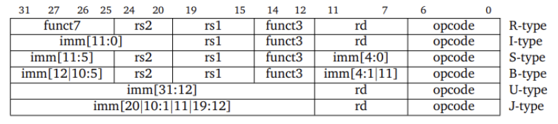
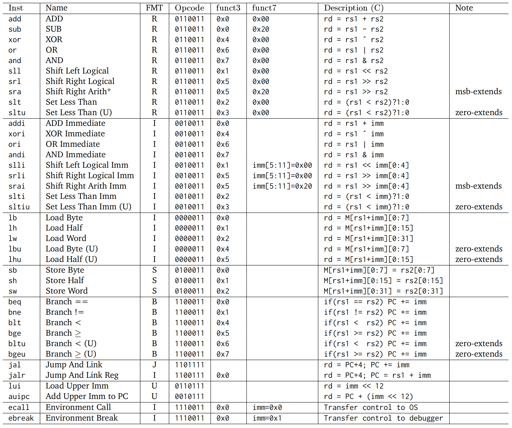

指令：计算机的语言¶
这里主要讲的是 RISC-V 指令集，若要了解 x86 指令集，可以参考另一篇笔记。
指令集设计原则¶
- Simplicity favors regularity，简单源自规整
- 指令包含3个操作数
- 基本 RISC-V ISA 是定长的 32-bit 的指令
- Smaller is faster，越少越快
- 寄存器个数一般不超过 32 个
- Make the common case fast，让常见的情况快
- 小常数是常见的，针对立即数的操作避免了额外的加载操作
- 经常有 0 参与计算，因此专门将零存在
x0中
- Good design demands good compromises，好的设计需要好的折中
- 例如，为了扩大立即数的范围，牺牲了操作码的位数
寄存器¶
RISC-V 有 32 个 64 位的通用寄存器，分别用 x0 到 x31 表示，也可以使用其别名，具体为：
x0一直为 0 (zero)x1返回地址寄存器 (Return Address, ra)x2栈指针 (Stack Pointer, sp)x3全局指针 (Global Pointer, gp)x4线程指针 (Thread Pointer, tp)x5-x7临时寄存器 (Temporaries, t0-t2)x8保留寄存器 (Frame Pointer/Saved, fp/s0)x9保留寄存器 (Saved, s1)x10-x17参数/结果寄存器 (Arguments, a0-a7)x18-x27保留寄存器 (Saved, s2-s11)x28-x31临时寄存器 (Temporaries, t3-t6)
其中 ra, sp, gp, tp 也是保留寄存器。保留寄存器需要在被调用时将原来的值保存到栈中，并在之后恢复，而临时寄存器可以不管原来的值，直接修改。
此外，RISC-V 还有 pc (Program Counter) 寄存器，用于存储当前程序将要执行的指令的地址，无法直接访问和修改。
指令¶
指令类型¶
RV32I 基础指令集中的指令有以下几种格式：

其中，B 型指令也被称为 SB 型指令，J 型指令也被称为 UJ 型指令。
对应的机器码如下：

各符号的含义为：
opcode操作码，指明指令的类型，占 7 位rd目标寄存器，占 5 位funct3附加操作码，占 3 位rs1第一个源寄存器，占 5 位rs2第二个源寄存器，占 5 位funct7附加操作码，占 7 位imm立即数，占 12 位 或 20 位
算术指令¶
add rd, rs1, rs2加法，rd = rs1 + rs2sub rd, rs1, rs2减法，rd = rs1 - rs2xor rd, rs1, rs2异或，rd = rs1 ^ rs2or rd, rs1, rs2或，rd = rs1 | rs2and rd, rs1, rs2与，rd = rs1 & rs2sll rd, rs1, rs2逻辑左移 (Shift Left Logical)，rd = rs1 << rs2srl rd, rs1, rs2逻辑右移 (Shift Right Logical)，rd = rs1 >> rs2sra rd, rs1, rs2算术右移 (Shift Right Arithmetic)，会进行符号扩展slt rd, rs1, rs2设置小于 (Set Less Than)，rd = (rs1 < rs2) ? 1 : 0sltu rd, rs1, rs2无符号设置小于 (Set Less Than Unsigned)
上述指令都是 R 型指令，即操作数都在寄存器中。除了减法以外，都可以在后面加上一个 i 变成 I 型指令，如 addi rd, rs1, imm，且此时移位指令只会取立即数的低五位，最多只能移动 31 位。
取反可以通过与全为 1 的立即数异或实现。
加载指令¶
从内存中加载数据到寄存器 rd 中的操作为 I 型指令：
lb rd, offset(rs1)加载字节lh rd, offset(rs1)加载半字lw rd, offset(rs1)加载字ld rd, offset(rs1)加载双字lbu rd, offset(rs1)加载无符号字节lhu rd, offset(rs1)加载无符号半字lwu rd, offset(rs1)加载无符号字
存储指令¶
将寄存器 rs2 中的数据存储到内存中的操作为 S 型指令：
sb rs2, offset(rs1)存储字节sh rs2, offset(rs1)存储半字sw rs2, offset(rs1)存储字sd rs2, offset(rs1)存储双字
分支指令¶
分支指令是 B 型指令，用于根据条件跳转：
beq rs1, rs2, offset若rs1 == rs2，则跳转到PC + offsetbne rs1, rs2, offset若rs1 != rs2，则跳转到PC + offsetblt rs1, rs2, offset若rs1 < rs2，则跳转到PC + offsetbge rs1, rs2, offset若rs1 >= rs2，则跳转到PC + offsetbltu rs1, rs2, offset若rs1 < rs2，则跳转到PC + offsetbgeu rs1, rs2, offset若rs1 >= rs2，则跳转到PC + offset
在 RISC-V 中，汇编器会将标号转换成相对于当前指令地址的偏移量，从而实现跳转到标号所在位置。
需要注意的是，在 B 型指令中，除了 12 位立即数之外，还有 imm[0] 默认为 0，可将寻址范围扩大一倍。
跳转指令¶
jal rd, offset跳转并链接 (Jump And Link)，rd = PC + 4，PC = PC + offset，为 J 型指令，立即数有 20 位，最大跳转范围为 1 MBjalr rd, rs1, offset跳转并链接 (Jump And Link Reg)，rd = PC + 4，PC = rs1 + offset，为 I 型指令，可以通过寄存器实现更大范围的跳转
需要注意的是，在 J 型指令中，除了 20 位立即数之外，还有 imm[0] 默认为 0，可将寻址范围扩大一倍。
阶乘函数
先来看 C 实现的阶乘函数：
long long fact(long long n) {
if (n < 1) return 1;
else return n * fact(n - 1);
}
下面是对应的 RISC-V 汇编代码，其中输入位于 a0，输出位于 a1：
fact:
addi sp, sp, -16 // adjust stack for 2 items
sd a0, 0(sp) // save the argument n
sd ra, 8(sp) // save the return address
addi t0, a0, -1 // t0 = n - 1
bge t0, x0, L1 // if n >= 1, go to L1
addi a1, x0, 1 // return 1 if n < 1
addi sp, sp, 16 // recover sp to pop 2 items
jalr x0, 0(ra) // return to caller
L1:
addi a0, a0, -1 // n >= 1: argument gets n - 1
jal ra, fact // call fact with n - 1
ld a0, 0(sp) // restore argument n
ld ra, 8(sp) // restore the return address
mul a1, a1, a0 // return n * fact(n - 1)
addi sp, sp, 16 // adjust stack pointer to pop 2 items
jalr x0, 0(ra) // return to the caller
其他指令¶
跟大立即数有关的指令有：
lui rd, immLoad Upper Immediate，会将imm[31:12]放在寄存器 rd 的高 20 位，可与addi配合得到 32 位常数，为 U 型指令auipc rd, offsetAdd Upper Immediate to PC，rd = PC + offset << 12，为 U 型指令，常与jalr指令配合使用
跟同步有关的原子指令有：
lr.w/d rd, (rs1)读取保留 (Load Reserved)，将 rs1 地址中的内容加载到 rd 中，然后在 rs1 地址上设置保留标记sc.w/d rd, (rs1), rs2条件存储 (Store Conditional)，若 rs1 地址上设置了保留标记，则将 rs2 中的内容存储到 rs1 地址上，并将 rd 置 0，表示成功，否则将 rd 置 1，表示失败
lr.w/d 和 sc.w/d 都是原子操作，不能在同一个地方同时进行，可以用于防止数据竞争 (Data race)，实现同步机制。
atomic swap
将 x23 中的值与 x20 对应地址中的值交换：
again:
lr.d x10, (x20)
sc.d x11, (x20), x23 // x11 = status
bne x11, x0, again // branch if store failed
addi x23, x10, x0 // x23 = loaded value
Lock 和 Unlock
地址 x20 存放着锁，当且仅当 x20 对应的地址未被锁且可以存入数据时，将 1 写入 x20 对应的地址，为其上锁：
addi x12, x0, 1 // copy locked value
again:
lr.d x10, (x20) // read lock
bne x10, x0, again // check if it is 0 yet
sc.d x11, (x20), x12 // attempt to store
bne x11, x0, again // branch if fails
将 0 写入 x20 对应的地址，解开锁：
sd x0, 0(x20) // free lock
地址¶
RISC-V 的寻址方式可以概括为：
- 立即数寻址 (Immediate addressing)：
addi x5, x6, 4 - 寄存器寻址 (Register addressing)：
add x5, x6, x7 - 基址寻址 (Base addressing)：
ld x5, 100(x6) - PC 相对寻址 (PC-relative addressing)：
beq x5, x6, L1
内存是字节寻址的 (byte-addressed)，内存地址在指令中的格式为 offset(base)，其中 offset 为立即数，base 为基址寄存器。例如，对于一个双字数组 A，A[30] 可以表示为 240(x22)，其中 x22 存储了数组 A 的基址。
而且，RISC-V 是小端 (little endian) 存储的，即数据的低位放在低地址，高位放在高地址，存取数据都是从低往高处理。此外，RISC-V 也不要求字对齐，即一个字的起始地址不一定是 4 的倍数。
程序¶
程序的内存布局¶
当程序运行时，内存从低到高分为以下几个区域：
- 代码段 (Text segment)：存放程序的机器指令
- 数据段 (Data segment)：存放程序的全局变量
- 堆 (Heap)：存放动态分配的内存，由程序员手动管理，向高地址增长
- 栈 (Stack)：存放函数调用的参数和返回地址，由系统自动管理，向低地址增长
目标文件¶
源文件会先经过编译器 (Complier) 变成汇编语言程序，再经过汇编器 (Assembler) 变成目标文件，最后经过链接器 (Linker) 变成可执行文件。
目标文件是二进制文件，包含了机器码和数据，由以下几部分组成（这里以 Linux 的 ELF 格式为例）：
- ELF 文件头 (ELF Header)：包含了目标文件的头信息，如文件名、运行平台、程序入口地址、段表的大小和起始地址等
- 段表 (Section Header Table)：存放各个段的信息，如段名、段的类型、段的偏移、段的大小等
- 代码段 (.text)：存放程序的指令
- 初始化数据段 (.data)：存放已经初始化的全局变量与局部静态变量
- 未初始化数据段 (.bss)：存放未初始化的全局变量与局部静态变量
- 符号表 (.symtab)：存放了目标文件中的符号信息，用于将不同文件的变量、函数等链接起来，包含符号名、符号的类型、符号所在段等，其中符号名是一个下标值，代表在字符串表中的偏移量
- 字符串表 (.strtab)：存放了段名、变量名等字符串数据
- 重定位表 (.rel.text)：存放了代码段中需要重定位的地址，用于链接器重定位代码段对外部模块的引用，例如 .text 段中对外部
printf()函数的调用
链接多文件¶
链接器会将目标文件中的符号 (Symbol) 解析为地址，将多个目标文件链接成一个可执行文件，大致步骤为：
- 将目标文件中的代码和数据模块放入内存中
- 确定数据和指令标签的地址
- 修补内部和外部引用，即将代码段中对外部模块的引用替换为实际地址
当链接文件时，静态链接库 (Static Linking Library) 会被直接复制到可执行文件中，而动态链接库 (Dynamic Linking Library) 则会在程序运行时加载库文件，这样可以减小可执行文件的大小，并且更新库文件后无需重新编译程序。
加载程序¶
加载一个程序的步骤大体为：
- 读取文件头，确定各个段的大小
- 创建虚拟地址空间
- 将代码段和初始化数据段复制到内存中，或者设置页表项，以便在需要时进行缺页处理
- 在栈上设置参数
- 初始化寄存器，包括 sp, fp, gp 等
- 跳转到启动程序，将参数复制到 x10 等，然后调用 main 函数
- 当 main 函数返回后，执行系统调用退出程序
MIPS¶
MIPS 是 RISC-V 的商业前身，两者有许多相似之处：
- 相似的基本指令集
- 都是 32 位指令
- 都有 32 个通用寄存器，寄存器 0 一直为 0
- 都有 32 个浮点寄存器
- 只能通过加载/存储指令访问内存，对所有数据大小使用一致的寻址模式
不过，两者的条件分支有所不同：
- RISC-V 有
blt,bge,bltu,bgeu命令 - MIPS 得要先使用
slt,sltu，然后使用beq,bne才能完成分支跳转
扩展指令集¶
- M: 整数乘除指令扩展
- A: 原子指令扩展
- F: 单精度浮点指令扩展
- D: 双精度浮点指令扩展
- C: 压缩指令扩展